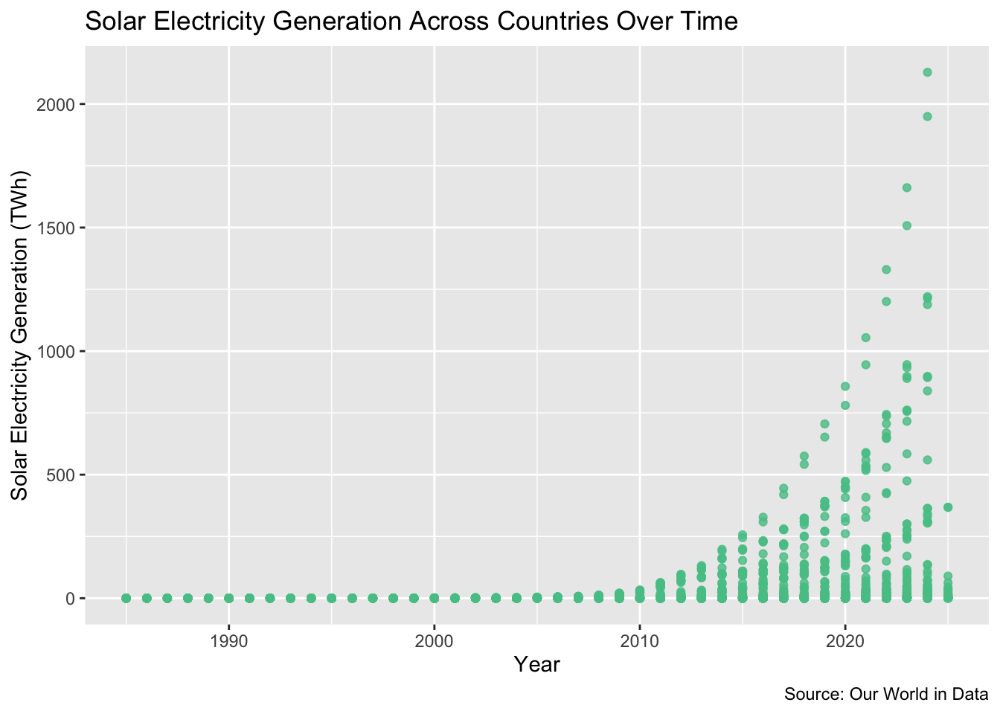
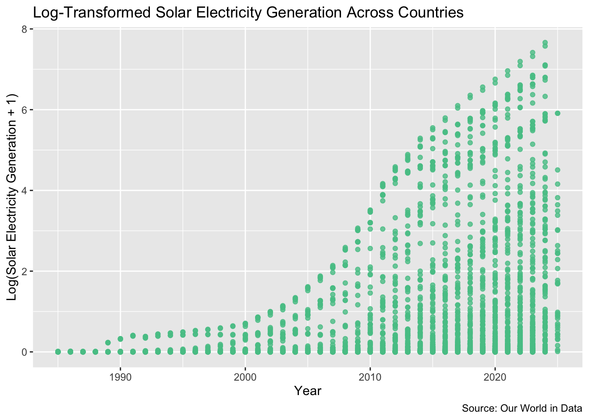
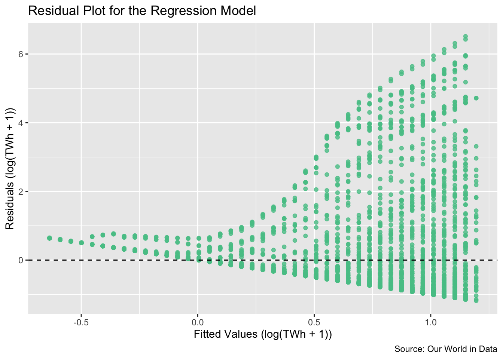
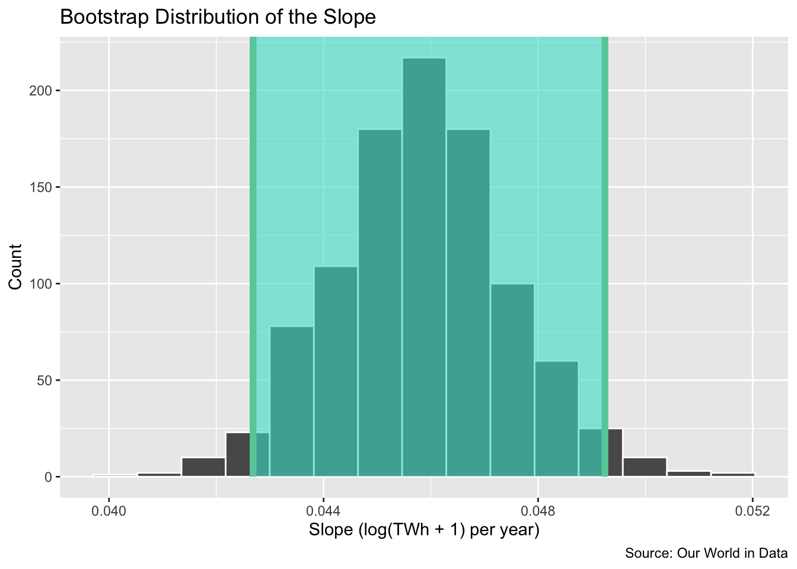
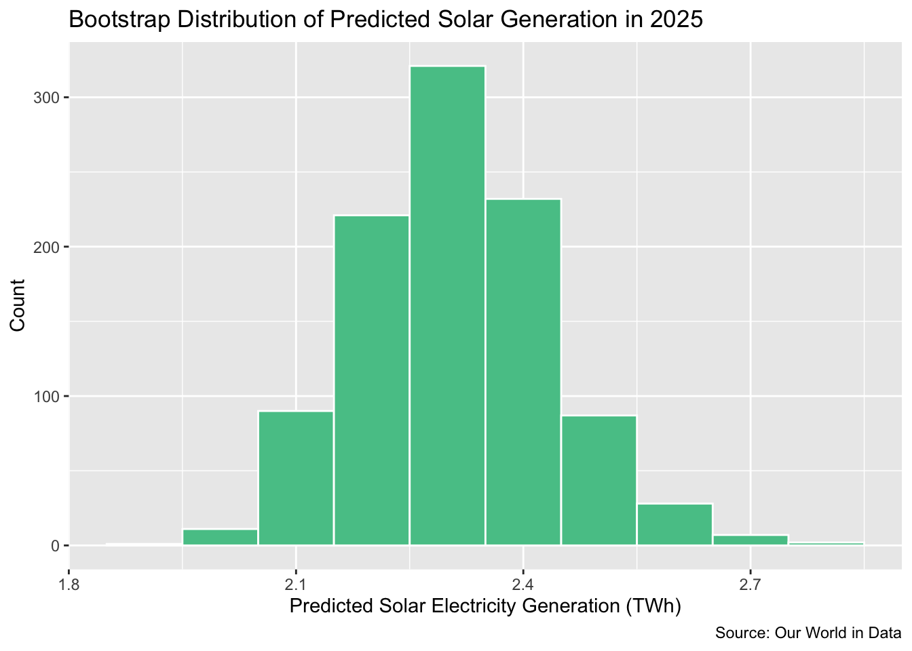

Introduction
This post looks at how solar electricity generation has changed over time around the world. The data comes from Our World in Data and tracks electricity production from different energy sources for many countries over multiple years. Each row in the dataset represents one country in one specific year. For this analysis, I use year as the explanatory variable and solar electricity generation, measured in terawatt-hours, as the response variable. In simple terms, I want to see whether solar energy production tends to increase over time and whether a straight-line model can describe that pattern. The dataset contains 6714 observations.
Because the data includes many different countries, the results show an overall global trend rather than what is happening in any one country. This means the model captures the general pattern of solar growth over time, but it does not account for differences between individual countries.
Exploratory Visualization
Before fitting a model, I first created a scatterplot of solar electricity generation against year. A scatterplot is a graph that shows how two variables are related by plotting each observation as a point.
In the original graph, each point represents a country in a specific year. The horizontal axis shows the year, and the vertical axis shows how much solar electricity that country produced. The plot shows that solar electricity generation increases over time, but the pattern is not a straight line. For many years, values stay very close to zero, and then they increase much more quickly in later years. This creates a curved shape.
Since linear regression works best when the pattern looks more like a straight line, I applied a log transformation to the solar variable. This transformation reduces the effect of very large values and spreads out smaller ones, making the pattern easier to see.

After applying the log transformation, the relationship between year and solar generation appears more linear. The upward trend is still there, but the points are more evenly spread out, so I use the log-transformed variable for the rest of the analysis. This suggests that the log-transformed variable is more appropriate for a linear model than the original scale.
Correlation
To understand how closely year and solar electricity generation are related, I calculated the correlation between the two.
The correlation is 0.352. This number is positive, which means that as the years go on, solar electricity generation generally increases. However, the value is not very large, which tells us that the relationship is not very strong.
In simple terms, solar energy has been increasing over time, but the year by itself does not fully explain why. This makes sense because the data includes many different countries, and each country has its own policies, resources, and level of development that also affect solar energy production.
The Model
I then built a simple model to see how well year can be used to estimate solar electricity generation.
| term | estimate |
|---|---|
| (Intercept) | -91.5103 |
| Year | 0.0458 |
The model produces two numbers: an intercept and a slope. When Year = 0, the predicted value of log(TWh + 1) is −91.51. However, this is not meaningful in this context because year 0 is far outside the range of the data, so the intercept mainly serves as a mathematical starting point rather than something to interpret directly.
The slope is 0.0458 log(TWh + 1) per year, which is more important. It tells us that for each additional year, the log of solar electricity generation increases by 0.0458, indicating a steady percentage increase in solar generation over time. In simpler terms, solar electricity has generally been increasing over time.
Because the data includes many different countries, this should be interpreted as an average global pattern rather than a prediction for any one specific country.
Residual Plot
To check whether the linear model is a good fit, I created a residual plot.

In this plot, the points are not randomly scattered around zero. Instead, there is a visible pattern, and the spread of the points increases as the fitted values get larger. This suggests that the model does not fully capture the relationship in the data.
In simple terms, while the model shows that solar electricity tends to increase over time, it does not explain all of the variation. Because of this, the model can be considered reasonable but imperfect. This makes sense because the data includes many different countries, which likely follow different patterns of solar growth.
Model Fit
I evaluated how well the model fits the data using two measures: R² and RMSE.
| Metric | Value |
|---|---|
| R-squared | 0.1236 |
| RMSE on the log(TWh + 1) scale | 1.1419 |
The model has an R² of 0.124, which means that about 12.4% of the variation in solar electricity generation is explained by year. This suggests a weak fit, meaning that year alone does not do a very good job of explaining differences in solar energy across countries.
The RMSE is about 1.142, which means that the model’s predictions are typically off by about 1.14 on the log(TWh + 1) scale. Because the model is on the log scale, this error reflects differences in the transformed values rather than raw terawatt-hours. In simple terms, there is still a noticeable amount of error in the model’s predictions.
Taken together, these results suggest that while solar electricity generally increases over time, year by itself is not enough to fully explain the variation in solar generation. Other factors, such as differences between countries, likely play an important role.
Bootstrap Confidence Interval for the Slope
The slope from the model is based on this specific dataset, but if the data were slightly different, the slope might also change. To understand how much it could vary, I used a method called bootstrapping to estimate a range of likely values for the slope.
| Lower Bound | Upper Bound |
|---|---|
| 0.0427 | 0.0492 |

The 95% confidence interval for the slope ranges from 0.0427 to 0.0492 log(TWh + 1) per year. This means that the true slope is likely to fall somewhere within this range.
Since the interval does not include 0, this provides evidence that there is a real positive relationship between year and solar electricity generation. In simple terms, this supports the idea that solar energy has been increasing over time, and this pattern is unlikely to be due to random chance.
Because the data includes many countries, this result reflects an overall global trend rather than changes within any single country.
Prediction with Bootstrap Interval
To make the model more concrete, I used it to predict solar electricity generation for the year 2025, which is within the range of the data.
| Year | Predicted Log Solar | Predicted Solar (TWh) |
|---|---|---|
| 2025 | 1.1951 | 2.3038 |
I also used bootstrap resampling to quantify uncertainty in that prediction.
| Lower Bound (TWh) | Upper Bound (TWh) |
|---|---|
| 2.0717 | 2.5778 |

For each bootstrap sample, I refit the linear regression model and predicted solar generation for 2025. This means the interval reflects uncertainty in the estimated regression line, not just the original fitted model.
The model first predicts solar generation on the log-transformed scale because I used the log version of the solar variable in the regression. For 2025, the predicted log value is 1.1951. I then converted that value back into terawatt-hours using exponentiation, so the prediction is easier to interpret. After converting it back, the model predicts about 2.30 TWh of solar electricity generation for 2025.
The 95% bootstrap interval ranges from 2.07 to 2.58 TWh. This means that while the model’s best estimate is about 2.30 TWh, a reasonable range for the predicted value is between 2.07 and 2.58 TWh.
In simple terms, the prediction is fairly precise, but it is still an estimate. Because the data includes many different countries, this prediction reflects an average global country-year pattern rather than what will happen in any one specific country.
Conclusion
Overall, this analysis shows that solar electricity generation has increased over time across countries, and the relationship becomes easier to model after applying a log transformation. The positive correlation, positive slope, and bootstrap confidence interval for the slope all point in the same direction, suggesting that this upward trend is real and not just due to random variation.
At the same time, the residual plot and RMSE show that year alone does not explain everything. There is still noticeable variation that the model does not capture, so it should be seen as a simple summary of the overall trend rather than a perfect prediction tool.
The prediction for 2025 provides a reasonable estimate of solar generation, but the prediction interval shows that there is still uncertainty around that value. This reflects the fact that different countries have experienced different rates of growth in solar energy.
Overall, year helps explain the general increase in solar electricity, but other factors not included in the model also play an important role.